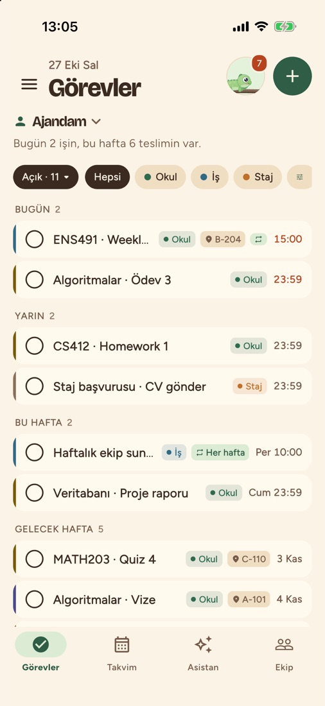
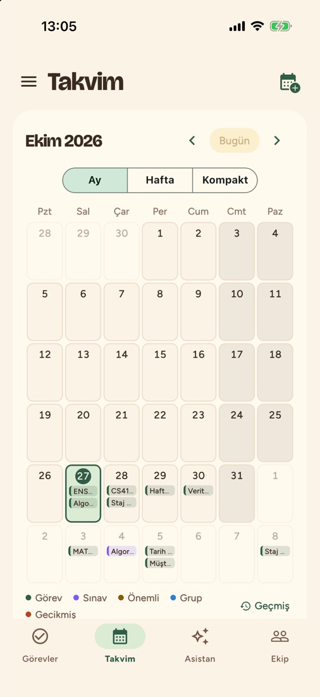
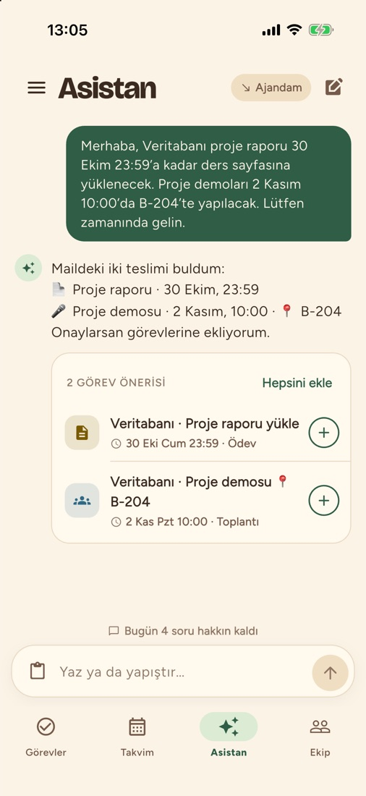
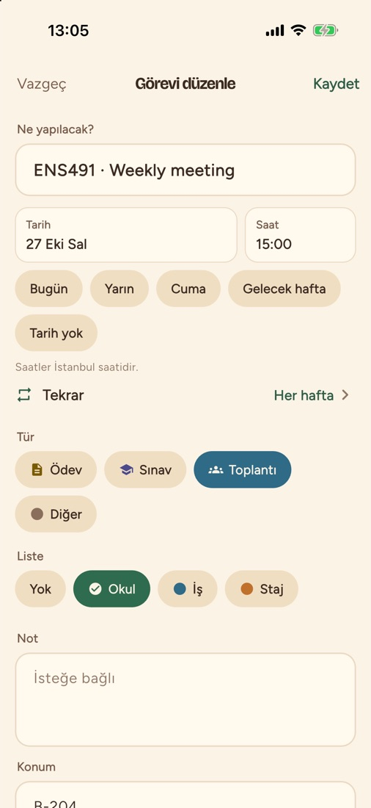
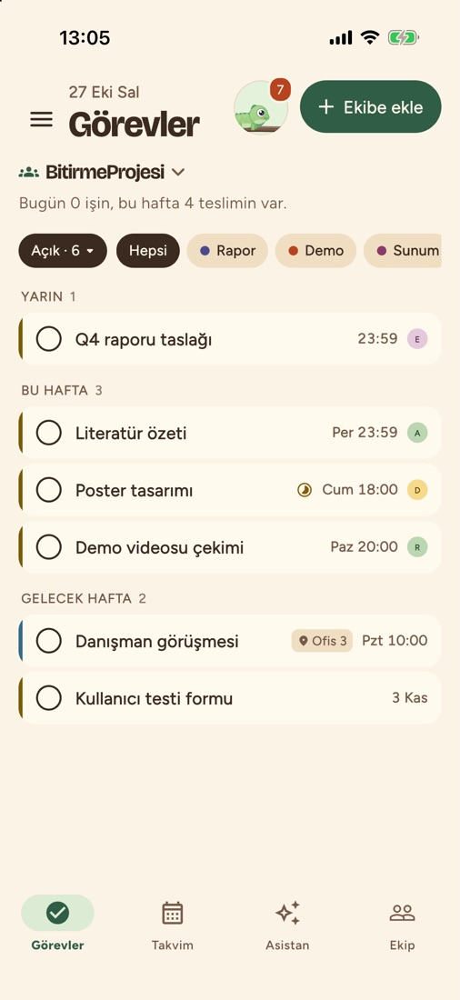

Teslimlerin, toplantıların, ekip işlerin. Hepsi tek listede.
Termin, okulda ve işte yetiştirmen gereken her şeyi son tarihe göre sıralar. Bugün, yarın, bu hafta; en yakını en üstte. Okul, İş, Staj gibi kendi listelerini açarsın, teslime 3 gün, 1 gün ve 3 saat kala hatırlatma gelir.

Takvimini bir kere bağla
Google Takvim, Outlook, Moodle ya da SUCourse. iCal linkini yapıştırman yeterli, yeni ve değişen teslimler kendiliğinden gelir.
Ay, hafta ya da kompakt görünüm var. Bir güne dokunursan o günü saat saat görürsün.

Maili yapıştır, görev çıksın
Hocanın duyurusu, yöneticinin maili, ekipten gelen mesaj. Asistana yapıştırınca tarih, saat ve yeri bulup görev olarak önerir.
Sen onaylamadan hiçbir şey eklenmez.

Her hafta olanı bir kere ekle
Haftalık toplantı, vardiya, düzenli rapor. Her gün, 2 günde bir, her hafta, her ay ya da kendi seçtiğin aralık. Bitirince sıradaki kendiliğinden eklenir.

Grup projesi de olur, iş ekibi de
Davet koduyla grup kur. "Kime?" ile görevi birine ata, Rapor, Demo, Sunum gibi ortak listelerle ilerleyin. Kim neyi bitirmiş, hepiniz görürsünüz.
Grup sohbeti sadece grup içinde, mesajlar 24 saat sonra silinir.

Bir de Buki var
Buki senin bukalemunun. Günün işlerini bitirdikçe sinek kazanır ve büyür. İşler birikirse rengi solar, o yüzden seriyi bozmamaya bak.